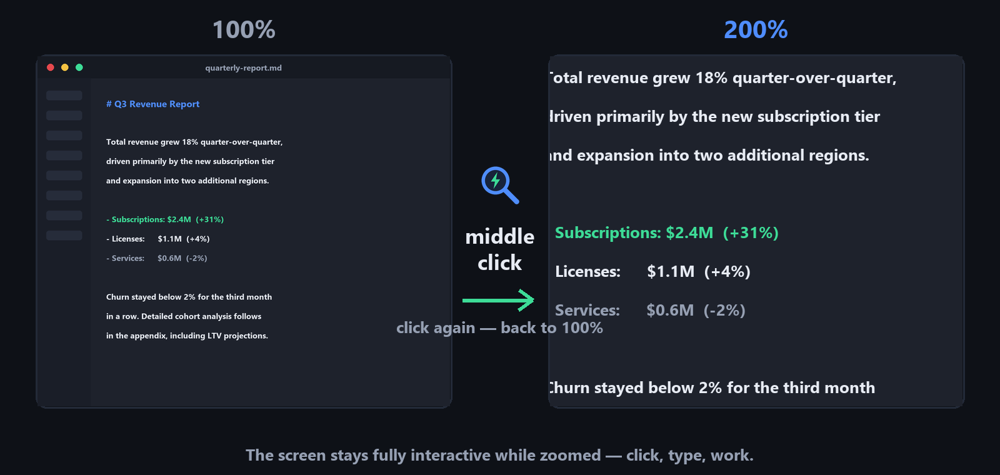
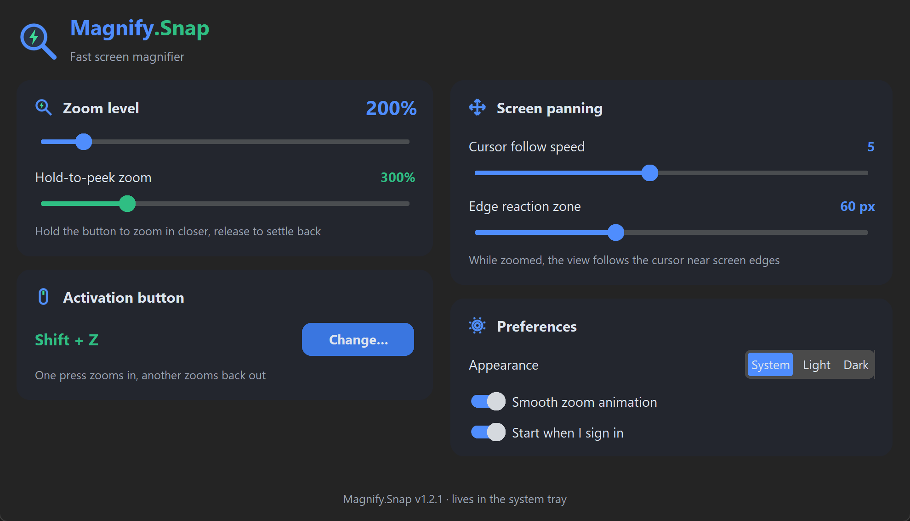

Click — zoom.
Click — back. ⚡
One mouse button is the whole interface. Middle click — the screen zooms to 200%. Middle click again — you're back. No key combos, no toolbars, no widgets. And while zoomed, the screen stays fully interactive: click, type and work as usual. Free, for Windows and Linux.
Open source · no ads · view on GitHub
While zoomed, move the cursor to a screen edge — the view glides along.

“I just wanted to look closer and keep working. The built-in magnifiers demand key combos to start, more combos to zoom, and park a toolbar on the screen. Third-party tools were heavy, fiddly or both. I searched for something truly fast and convenient — and found nothing. So I built it.”
Why Magnify.Snap
Instant toggle
One press zooms in, another snaps back. Hold the button to peek even closer for a moment — release and it settles. Rebind to any button, key or combination.
Zero friction
The screen stays fully interactive while zoomed — click buttons, type text, drag windows. It's your desktop, just bigger.
Smart panning
The view follows your cursor only when it reaches a screen edge — smooth, predictable, configurable speed.
Native zoom engine
Windows Magnification API, GNOME magnifier or KWin Zoom — hardware-accelerated magnification, no overlays or lag.
Your look
Follows the system theme out of the box, with Light and Dark modes one click away. Zoom level from 125% to 800%.
Tiny and honest
A single portable file. No installer, no ads, no telemetry. Open source — inspect every line on GitHub.
Simple on the surface, tunable underneath

Magnify.Snap works out of the box — install nothing, configure nothing, middle click and go.
When you want more, the settings are one tray-click away: zoom level from 125% to 800%, a hold-to-peek boost level, any mouse button / key / combination as the trigger, cursor-follow speed, light & dark themes, autostart.
No installer. No ads. No telemetry. A single portable file.
Questions people ask
Is Magnify.Snap really free?
Yes. Free and open source (MIT license), no ads, no telemetry, no paid tiers. A single portable file — no installer. The only network request it makes is an optional daily update check against GitHub — one click updates in place, and the check can be turned off in settings.
How is it different from the built-in Windows Magnifier?
The built-in magnifier wants key combos to start, zoom and quit, and parks a toolbar on your screen. Magnify.Snap is one mouse button: middle-click zooms to 200%, another click snaps back, holding the button peeks even closer. Nothing else appears on screen.
Can I still click and type while zoomed?
Yes — magnification happens at the OS compositor level, so the screen stays fully interactive: click, type, drag windows as usual.
Can I use a different button or key?
Any mouse button, key, or combination with Ctrl/Alt/Shift/Win. Assign it by physically pressing it in the settings.
Does it work on Linux?
Yes — GNOME (built-in magnifier) and KDE Plasma (KWin Zoom). Global input capture works best on X11.
Up and running in a minute
Download the file for your OS with the buttons above.
Run it. The app minimizes straight to the system tray — look for the blue magnifier icon.
Middle-click anywhere to zoom. Click the tray icon to open settings and make it yours.